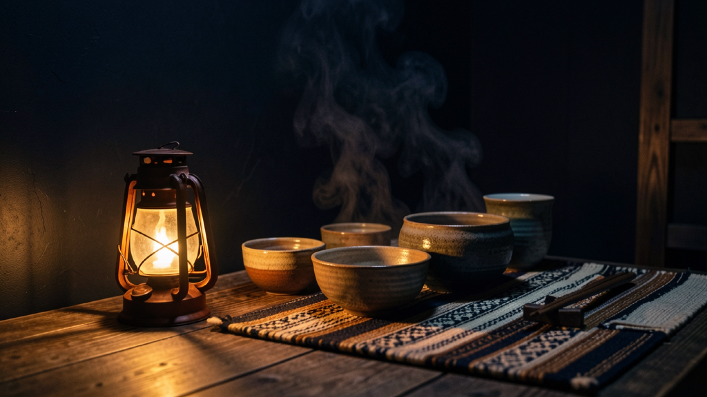

暗いほど、料理の温度が立つ。
黒、藍、朱。小さな店の灯りが、器と湯気をゆっくり浮かび上がらせます。

ここでは、急いで選ぶメニューよりも、その夜に合わせて整えられた食卓を待つ時間が似合います。電話をして、席を約束して、宮古島の夜に少しだけ余白をつくる。蔵はそんな予定の入れ方が似合う店です。
暗がり、島の湿度、器に落ちる灯り。蔵の魅力は、料理名だけでは伝えきれない空気にあります。だから最初に見せるのは、食卓へ近づくまでの気配です。
黒、藍、朱。小さな店の灯りが、器と湯気をゆっくり浮かび上がらせます。
地魚、島野菜、宮古味噌。観光の記号ではなく、暮らしの延長にある味を大切に。
食べ終えたあとに思い出すのは、皿の数よりも、その夜の会話と温度です。
人数、時間、食べたいもの、苦手なもの。前日までの一本で、その夜の食卓が立ち上がります。
地魚、島野菜、宮古味噌、豆腐。季節と仕入れに合わせて、女将の手が献立を整えます。
小鉢、魚、揚げ物、煮物、ご飯もの。会話の速度に合わせて、夜が進みます。
思い出すのは味だけではなく、店の距離、女将の声、夜風の湿度。旅の一日を締める食卓です。
湯気、器、島の色、暗がりの気配。急いで見せるのではなく、席につく前の空気から、蔵の夜を感じてもらいます。
思い出される看板の一品。言葉と余白で、席につく前の期待を静かに立ち上げます。
島の海から届く魚料理。日によって変わる楽しみを、余白で感じさせます。
ゴーヤ、冬瓜、島らっきょう。土地の味を家庭の温度で。
料理だけでなく、女将との距離、店の空気、島の話まで含めて一晩の体験に。
前日までの電話予約制。時間、人数、食べられないものを先に伝えて、宮古島の夜に一席を用意してもらいます。
平良の街から少し離れた場所で、旅の予定を静かに切り替える。到着前に電話で開店状況をご確認ください。
小さな食事処を気持ちよく楽しむために、電話の前に決めておくと安心なこと。
RESERVATION
蔵は小さな予約制の食事処です。ご来店前に、開店状況・人数・時間をお電話でご確認ください。
0980-73-4071 に電話する